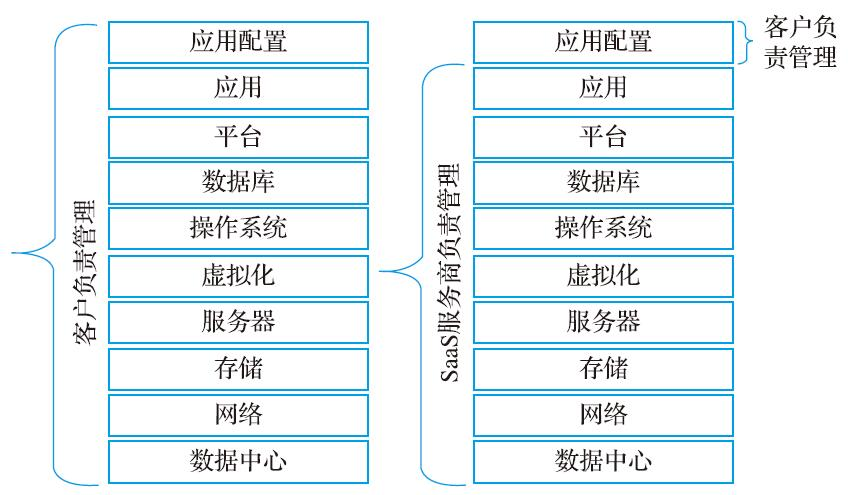

SaaS模式到底是什么？
2015 年是中国 SaaS 模式崛起的元年，大量创业者和投资人涌入这个赛道，催生了成百上千的产品，也诞生了一些独角兽企业。
2020 年新冠疫情席卷全球，这只黑天鹅使得协同办公成了大部分企业的刚需，于是协同办公软件一下子火起来了，比如钉钉、企业微信、飞书、WebLink 等都取得了井喷式的发展。
SaaS 是 Software-as-a-service 的缩写，中文译为“软件即服务”。SaaS 是 To B 模式的一种，它将传统的销售软件转换成销售服务。
软件产品的服务对象大致可以分为两类：
To B 的范围很大，SaaS 只是 To B 中的一个类别。
通常这些软件还需要不断维护和升级，每年还得支付一定比例的运维费用。如果软件挂了，很可能还需要支付单次维修费用。
因为软件通常在公司内网中使用，当软件出现问题时也会比较麻烦，软件公司需要通过 VPN 登录企业内网，或者派人现场解决。尤其是派人现场解决，不仅耗时，而且成本高昂。
SaaS 产品提供的是 Web 界面，用户只要有一台终端设备，不管是手机、平板还是电脑，在世界各地都可以联网使用，就像访问网站一样随时访问自己的软件。
企业购买 SaaS 软件以后并没有得到什么实物，得到的仅仅是对 SaaS 公司产品的使用权限。从这个角度看，SaaS 提供的不是产品，而是服务，企业购买的也不是产品，而是服务，所以说 SaaS 将销售软件变成了销售服务，也就是“软件即服务”。
下面是一张传统软件和 SaaS 软件部署方式的对比图：
更加重要的是，SaaS 产品通常采用按月/按年付费的订阅模式，企业能够以很低的成本切入，并随时决定是否继续付费。如果有更好产品出现，企业也可以很快地切换到该产品，切换成本也很低。
SaaS 模式让企业购买软件非常方便和便宜，企业不再需要动辄数十万、上百万的投入。
传统的软件销售模式更像是一种“打包付费”的一锤子买卖，客户付款完成以后，服务基本就结束了。而 SaaS 模式采用订阅模式，还可以弹性扩展，更加注重“细水长流”，客户付款完成以后，服务才刚刚开始。
对于 SaaS 服务商而言，SaaS 的本质是“续费”，它的奥秘在于时间和复利。续费的核心是“客户赚钱”，能够让客户真正且持续的成功，是 SaaS 服务商首先要解决的问题。
SaaS 的概念没有严格的定义，对于普通读者而言，这里我们用一个比喻来解释：
SaaS 模式节省了打井和维护水井的麻烦，也节省了一大笔工程费用，此时自来水公司的业务模式就变成了“供水即服务”。
对于软件开发者而言，SaaS 是一种新的软件架构模式，它引入了共享单个实例、多租户、权限管理、存储模式、计费方式等概念。
而 SaaS 软件部署在云端，只要 SaaS 服务商在云端完成升级或者模块替换，所有企业都可以第一时间使用，而且不耽误工作。
传统软件就好像一家手工裁缝店，用料、款式、大小和厚薄都由客户决定好以后再进行缝制，也就是量身定制。SaaS 软件好像一家服装厂，所有衣服都是调研了大量客户喜欢的款式和颜色以后再进行生产，虽然可以满足大多数客户的需求，但是不能兼顾某些小众客户的个性化偏好。
2020 年新冠疫情席卷全球，这只黑天鹅使得协同办公成了大部分企业的刚需，于是协同办公软件一下子火起来了，比如钉钉、企业微信、飞书、WebLink 等都取得了井喷式的发展。
SaaS 是 Software-as-a-service 的缩写，中文译为“软件即服务”。SaaS 是 To B 模式的一种，它将传统的销售软件转换成销售服务。
软件产品的服务对象大致可以分为两类：
- To B，To Business，面向企业；
- To C，To Customer，面向个人消费者。
To B 的范围很大，SaaS 只是 To B 中的一个类别。
传统软件模式
基于运营和盈利需求，很多企业都会采购一些软件。在传统的模式下，企业需要购买整套软件以及网络设备（包括服务器、路由器等），并把软件部署到自己的服务器上，一次性支出一大笔费用，这有时候是好几个月，甚至半年/一年的利润。通常这些软件还需要不断维护和升级，每年还得支付一定比例的运维费用。如果软件挂了，很可能还需要支付单次维修费用。
因为软件通常在公司内网中使用，当软件出现问题时也会比较麻烦，软件公司需要通过 VPN 登录企业内网，或者派人现场解决。尤其是派人现场解决，不仅耗时，而且成本高昂。
SaaS 模式
在最新的 SaaS 模式下，软件开发公司会先把标准化的产品部署到公有的（一般都是公有的）云服务器上，然后向企业推销，企业如果有需求，只需要「注册 -> 付费 -> 配置软件」后就可以使用了，不仅免去了自己部署、升级和维护软件的麻烦，还极大地压缩了等待时间。SaaS 产品提供的是 Web 界面，用户只要有一台终端设备，不管是手机、平板还是电脑，在世界各地都可以联网使用，就像访问网站一样随时访问自己的软件。
企业购买 SaaS 软件以后并没有得到什么实物，得到的仅仅是对 SaaS 公司产品的使用权限。从这个角度看，SaaS 提供的不是产品，而是服务，企业购买的也不是产品，而是服务，所以说 SaaS 将销售软件变成了销售服务，也就是“软件即服务”。
下面是一张传统软件和 SaaS 软件部署方式的对比图：

更加重要的是，SaaS 产品通常采用按月/按年付费的订阅模式，企业能够以很低的成本切入，并随时决定是否继续付费。如果有更好产品出现，企业也可以很快地切换到该产品，切换成本也很低。
SaaS 模式让企业购买软件非常方便和便宜，企业不再需要动辄数十万、上百万的投入。
传统的软件销售模式更像是一种“打包付费”的一锤子买卖，客户付款完成以后，服务基本就结束了。而 SaaS 模式采用订阅模式，还可以弹性扩展，更加注重“细水长流”，客户付款完成以后，服务才刚刚开始。
对于 SaaS 服务商而言，SaaS 的本质是“续费”，它的奥秘在于时间和复利。续费的核心是“客户赚钱”，能够让客户真正且持续的成功，是 SaaS 服务商首先要解决的问题。
SaaS 的概念没有严格的定义，对于普通读者而言，这里我们用一个比喻来解释：
- 在二十年以前的农村，各家各户都需要自己挖井来解决吃水问题，打一眼井需要几千元，这就是传统的软件模式。
- 后来农村都改成集中供水了，也就是由自来水公司供水，用户只需要按时按量缴纳水费，打开水龙头就会有水，这就是 SaaS 模式。
SaaS 模式节省了打井和维护水井的麻烦，也节省了一大笔工程费用，此时自来水公司的业务模式就变成了“供水即服务”。
对于软件开发者而言，SaaS 是一种新的软件架构模式，它引入了共享单个实例、多租户、权限管理、存储模式、计费方式等概念。
SaaS 模式的优点
从客户的角度看，SaaS 模式主要有以下几个优点：1) 成本低
企业不需要购买服务器、路由器等网络设备，也不需要购买整套软件，只需要通过互联网按月/按年订阅服务即可，这给企业减少了一大笔开支，降低了使用门槛。2) 切换自由
传统的软件模式，企业往往和某家软件公司紧密绑定，很难再切换到另一家公司。而 SaaS 给了企业更大的自主权和选择权，由于切换成本低，企业可以随时选择另一家 SaaS 产品。3) 升级简单
传统的软件模式，企业想升级软件或者添加模块都需要额外付费，而且升级期间不能正常使用。而 SaaS 软件部署在云端，只要 SaaS 服务商在云端完成升级或者模块替换，所有企业都可以第一时间使用，而且不耽误工作。
4) 迭代速度快
SaaS 产品和 Web 产品类似，可以及时收集大量用户的反馈，快速迭代产品，易用性和符合度越来越好，远超传统软件。SaaS 模式的缺点
SaaS 产品都是统一化和标准化的，部署在云端让所有企业共享，企业无法进行功能定制或者二次开发，可能无法满足某些特殊行业或者业务的需求。传统软件就好像一家手工裁缝店，用料、款式、大小和厚薄都由客户决定好以后再进行缝制，也就是量身定制。SaaS 软件好像一家服装厂，所有衣服都是调研了大量客户喜欢的款式和颜色以后再进行生产，虽然可以满足大多数客户的需求，但是不能兼顾某些小众客户的个性化偏好。
关注公众号「站长严长生」，在手机上阅读所有教程，随时随地都能学习。内含一款搜索神器，免费下载全网书籍和视频。

微信扫码关注公众号